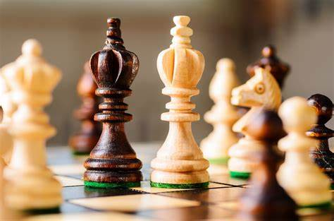
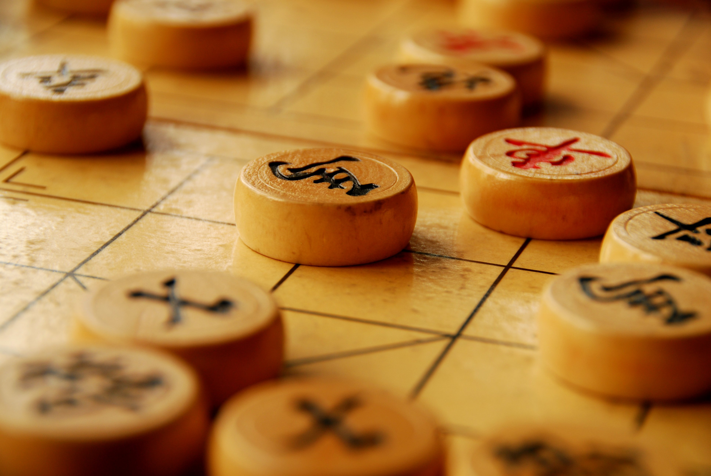

Chess is a board game for two players, called White and Black, each controlling an army of chess pieces, with the objective to checkmate the opponent's king. It is sometimes called international chess or Western chess to distinguish it from related games such as xiangqi (Chinese chess) and shogi (Japanese chess). The recorded history of chess goes back at least to the emergence of a similar game, chaturanga, in seventh century India. The rules of chess as they are known today emerged in Europe at the end of the 15th century, with standardization and universal acceptance by the end of the 19th century. Today, chess is one of the world's most popular games, and is played by millions of people worldwide.
The game is played on a square board of eight rows (called ranks) and eight columns (called files). By convention, the 64 squares alternate in color and are referred to as light and dark squares; common colors for chessboards are white and brown, or white and green.
The pieces are set out as shown in the diagram and photo. Thus, on White's first rank, from left to right, the pieces are placed as follows: rook, knight, bishop, queen, king, bishop, knight, rook. Eight pawns are placed on the second rank. Black's position mirrors White's, with an equivalent piece on the same file. The board is placed with a light square at the right-hand corner nearest to each player. The correct position of the light square may be remembered by the phrase "light on right", while the correct positions of the king and queen may be remembered by the phrase "queen on her own color" (i.e. the white queen begins on a light square, and the black queen on a dark square).
Xiangqi

The game represents a battle between two armies, with the primary object being to checkmate the enemy's general (king). Distinctive features of xiangqi include the cannon (pao), which must jump to capture; a rule prohibiting the generals from facing each other directly; areas on the board called the river and palace, which restrict the movement of some pieces but enhance that of others; and the placement of the pieces on the intersections of the board lines, rather than within the squares.
Each player in turn moves one piece from the point it occupies, to another point. Pieces are generally not permitted to move through points occupied by other pieces, the exception being the cannon’s capturing move. A piece can be moved onto a point occupied by an enemy piece, in which case the enemy piece is captured and removed from the board. A player cannot capture one of their own pieces. Pieces are never promoted (converted into other pieces), although the soldier gains the ability to move sideways after it crosses the river. Almost all pieces capture using their normal moves, while the cannon has a special capture move described below.